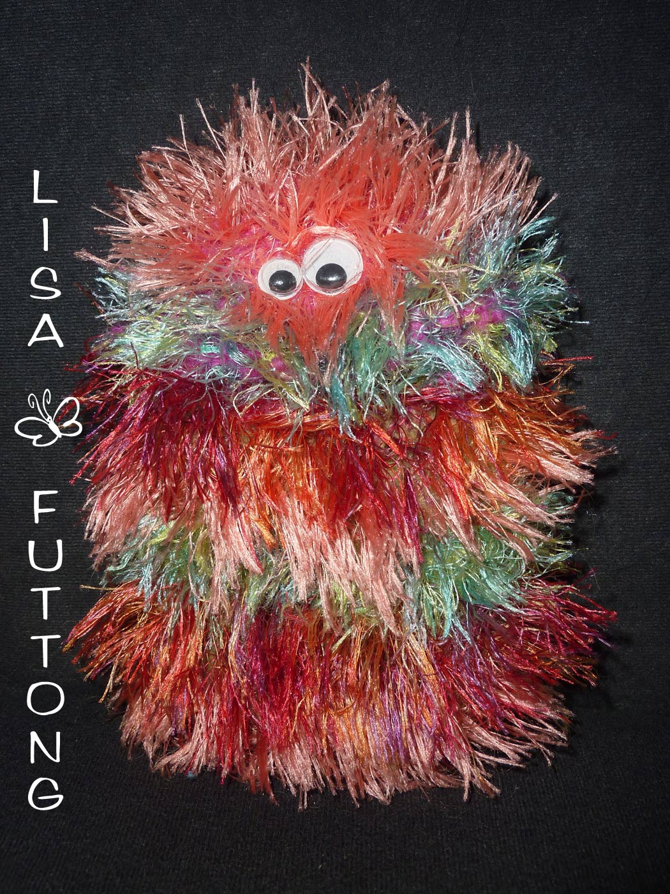

<div id="posts">

    <p>


      <p>

     <h2 class="title">Leider schon verkauft</h2>


      <p>
Auf dieser Seite finden Sie Stücke die bereits verkauft sind. Es handelt sich dabei um Unikate,die alle einzigartig sind.Jedoch können Sie selbstverständlich ein ähnliches Werk bei mir anfragen.
      </p>
      <h2 class="title">Anfragen:</h2>
<p>Kontaktieren Sie mich per e-mail oder rufen Sie mich einfach an! </p>
<address>
    Tel: 06383/579133<br />
        E-Mail: infoATlisafuttongDOTde<br />
        (Ersetzen Sie bitte AT mit @ und DOT mit .)
</address>

 <h2 class="title">Taschen</h2>

      <p>

      </p>
       <a href="images/taschen/froggy.jpg" rel="prettyPhoto[pp_gal]" title="Wer küsst den Frosch? Mit dieser tollen großen Einkaufstasche werden Sie zur Shopping-Queen, mit zwei Innentaschen,ca. 40x36cm, verkauft">
        
    </a>

      <a href="images/taschen/purplelove.jpg" rel="prettyPhoto[pp_gal]" title="Mein persönliches Highlight, das ich nicht mehr missen möchte, unverkäuflich">
        
    </a>
      <a href="images/taschen/baerchen.jpg" rel="prettyPhoto[pp_gal]"
       title="Eine traumhafte Kindertasche aus Teddybärenfell mit Glitzerblümchen verziert. Lässt Kinderherzen höher schlagen, schließt mit zwei Druckknöpfen in Herzform, ca. 22x24cm, verkauft">
        
    </a>

       <a href="images/taschen/dtkgtasche.jpg" rel="prettyPhoto[pp_gal]"
       title="Der absolute Schrei für jede Party, DTK-Gedächtnistasche,mit Reißverschluss, verkauft">
        
    </a>
    <a href="images/taschen/waldleben2x.jpg" rel="prettyPhoto[pp_gal]"
       title="Ein echter Hingucker: Eule und Co. bezaubern direkt. Runde Griffe die beim Öffnen der Tasche den Blick auf das gesamte Innenleben ermöglichen.Mit Innentasche, ca. 25x35cm, 49,95 €">
        
    </a>

    <a href="images/taschen/ballblue1.jpg" rel="prettyPhoto[pp_gal]" title="Verspielte Handtasche mit Strasssteinchen, Druckknopf zum Schließen, verkauft">
        
    </a>
 <a href="images/taschen/eule1.jpg" rel="prettyPhoto[pp_gal]" title="Super Süße Kindergartentasche nicht nur für Vorschulkinder,schließt mit zwei Druckknöpfen, ca. 24x22cm, verkauft">
        
    </a>
    <a href="images/taschen/karogirl.jpg" rel="prettyPhoto[pp_gal]"
       title="Handtasche, Model:  Karo Girl, mit fünf kleinen Aussentaschen und einer Innentasche,Innenfutter wie Griffe aus schwarzem Stoff mit Totenkopf-Muster, Druckknopf zum Schließen,ca.35x26cm , verkauft">
        
    </a>
     <a href="images/taschen/glitzerfilz.jpg" rel="prettyPhoto[pp_gal]"
       title="Die etwas andere Filztasche mit Glitzersteinchen,gestrickt, Innenfutter mit süßem Blümchenmuster und Innentasche, verkauft">
        
    </a>
    <a href="images/taschen/theater1.jpg" rel="prettyPhoto[pp_gal]"
       title="Elegant und schick, Beuteltasche mit Kordel zum zusammenziehen, Innen blau, ca.36x18cm, verkauft">
        
    </a>
        <a href="images/taschen/xmas.jpg" rel="prettyPhoto[pp_gal]" title="Bald ist wieder Weihnachten. Dann ist diese Einkaufstasche das Highlight der Saison, Innenfutter weiß mit roten Rentieren, mit Innentasche, verkauft">
        
    </a>
      <a href="images/taschen/janina1.jpg" rel="prettyPhoto[pp_gal]" title="Modern, verspielt und schick, ein Zauberhaftes Werk, verkauft">
        
    </a>
         <a href="images/taschen/andrea.jpg" rel="prettyPhoto[pp_gal]" title="Diese Tasche war ein Geschenk für einen ganz besonderen Menschen">
        
    </a>
    <a href="images/taschen/herbst.jpg" rel="prettyPhoto[pp_gal]" title="Samt und Seide, eine Tasche für besondere Anlässe, verkauft">
        
    </a>

    <a href="images/taschen/butterfly.jpg" rel="prettyPhoto[pp_gal]" title="Entzückende Schmetterlinge mit weißer Spitze die jedes Herz im Sturm erobern, verkauft">
        
    </a>
      <p>

      </p>
      <h2 class="title">Plüchis</h2>

      <p>

      </p>

       <a href="images/pluechis/weihnachtselch.jpg" rel="prettyPhoto[pp_gal]"
       title="Kuschelige Weihnachsts Elche, die das ganze Jahr was besonderes sind, genäht; ca. 25cm hoch, verkauft">
        
     </a>
    <a href="images/pluechis/ruberta.jpg" rel="prettyPhoto[pp_gal]"
       title="Süßes Bärenmädchen. Einfach zum Verlieben! Muster Beispiel, genäht, ca. 30cm groß, verkauft">
        
    </a>


  <a href="images/sonstiges/sorgenmonster_melli.jpg" rel="prettyPhoto[pp_gal]"
       title="Kuscheliges Monster, das all deine Sorgen frisst , genäht; Flokatistoff, ca. 25cm hoch, verkauft">
        
    </a>


      <h2 class="title">Tablettaschen</h2>

      <p>

      </p>
       <a href="images/tablettaschen/tabletsfrosch.jpg" rel="prettyPhoto[pp_gal]" title="Wer küsst den Frosch? Tablettasche für 7 Zoll Tablet PCs, mit 2 kleine Taschen im Deckel für Handy, Utensilien und Co, verkauft">
        
    </a>

      <a href="images/tablettaschen/meintablet.jpg" rel="prettyPhoto[pp_gal]" title="Meine eigene Tablettasche, zuckersüß, unverkäuflich">
        
    </a>
<p>

      </p>
      <h2 class="title">Handytaschen</h2>

      <p>
              <a href="images/handytaschen/clutch_schaf.jpg" rel="prettyPhoto[pp_gal]" title="Handclutch, Model:  Schäfchedn, für Handys bis ca. 13x7cm,  16,95 €">
        
    </a>
       <a href="images/handytaschen/clutch_fantasy.jpg" rel="prettyPhoto[pp_gal]" title="Handclutch, Model:  Fantasy, für Handys bis ca. 13x7cm,  16,95 €">
        
    </a>
<a href="images/handytaschen/clutch_blue.jpg" rel="prettyPhoto[pp_gal]" title="Handclutch, Model:  Blue, für Handys bis ca. 13x7cm,  verkauft">
        

    <a href="images/handytaschen/nora.jpg" rel="prettyPhoto[pp_gal]" title="Handmonster, Model:  Nora, für Handys bis max. 10cmx7cm, verkauft">
        
    </a>
<a href="images/handytaschen/lucy.jpg" rel="prettyPhoto[pp_gal]" title="Handmonster, Model:  Lucy, für Samsung Galaxy S4,genäht, Flokatistoff, 14,95 €">
        
    </a>
    <a href="images/handytaschen/theodor.jpg" rel="prettyPhoto[pp_gal]" title="Handmonster, Model: Theodor, für Handys bis max. 10cmx6,5cm, verkauft">
        
    </a>
    <a href="images/handytaschen/helga.jpg" rel="prettyPhoto[pp_gal]"
       title="Handmonster, Model:  Helga, für Handys bis max. 12cmx8cm, verkauft">
        
    </a>
 <a href="images/handytaschen/ulrike.jpg" rel="prettyPhoto[pp_gal]"
       title="Handmonster, Model:  Ulrike, für Handys bis max. 9cmx6,5cm, verkauft">
        
    </a>
       <a href="images/handytaschen/martin.jpg" rel="prettyPhoto[pp_gal]"
       title="Handmonster, Model:  Martin, für Handys bis max. 12cmx8cm, verkauft">
        
    </a>

</div>

{% include sub_menu.html %}